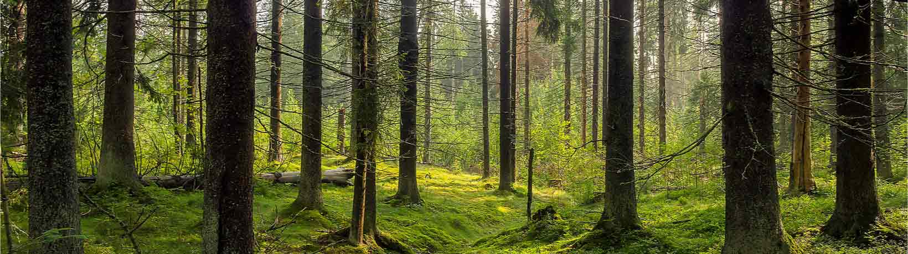
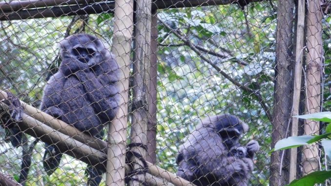
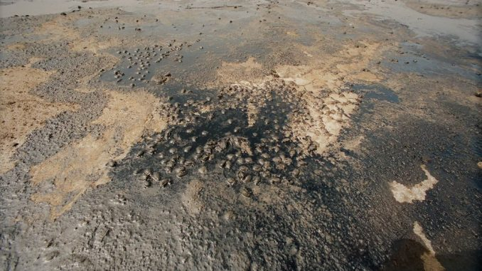
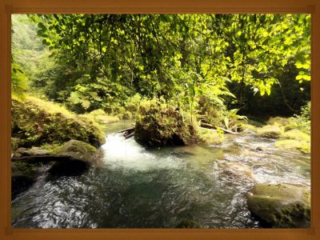

Web Lingkungan


Baca selengkapnya >>>>>
Melepasliarkan Owa Jawa ke Habitatnya
Lima individu owa jawa dilepasliarkan ke hutan lindung Gunung Malabar, Jawa Barat, hari ini (24/10) setelah direhabilitasi selama lima sampai tujuh tahun. Rehabilitasi dilakukan di Javan Gibbon Center d...Baca selengkapnya >>>>>

Baca selengkapnya >>>>>
Pengertian Pencemaran Tanah, Penyebab, Akibat dan Solusi
Pencemaran tanah adalah tercemarinya permukaan atau bawah tanah oleh polutan dan kontaminan. Akibat polusi tanah dapat menyebabkan gangguan kesehatan pada manusia ....Baca selengkapnya >>>>>

Manfaat hutan bagi manusia diantaranya menyediakan oksigen ....
Baca selengkapnya >>>>>
10 Manfaat Hutan Bagi Manusia dan Lingkungan Hidup
Manfaat hutan bagi manusia diantaranya menyediakan oksigen ....
Baca selengkapnya >>>>>